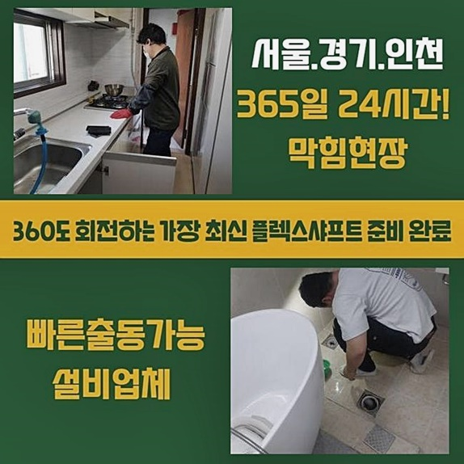
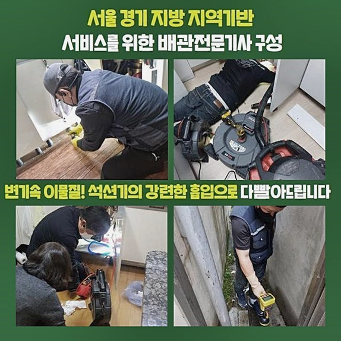
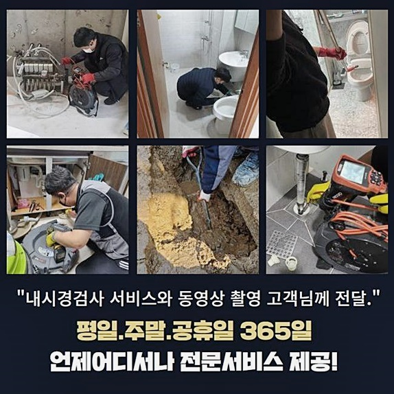
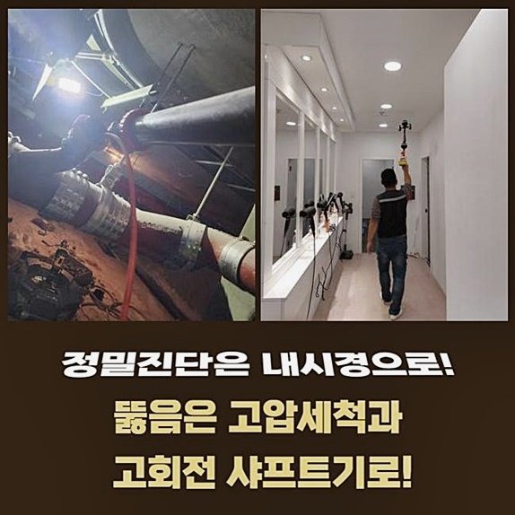
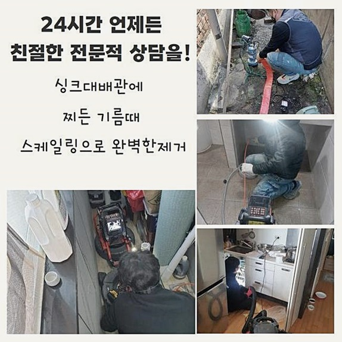
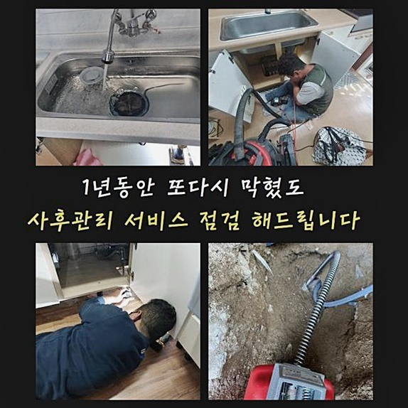

🏠 강서구 염창동욕실막힘 오곡동 횡주관청소 해결방법
용인시 처인구 배관막힘 전문 시공 후기

📋 작업 개요
- 위치: 용인시 처인구, 수원시 영통구, 화성시 동탄
- 서비스 유형: 배관막힘, 고압세척
- 작업 일시:
- 업체명: 하수구수사대 (010-5615-2118)
🔍 문제 상황
강서구 염창동욕실막힘 오곡동 횡주관청소 해결방법
집안에서 하수 시설을 오래 쓰면 쓸수록 각양각색의 원인들로 말미암아 물 흐름이 끊기는 현상이 눈앞에 펼쳐지기도 합니다
상가건물이나 주거시설 등 여러 곳에서 예외 없이 하수구가 마비되는 난감한 상황은 흔하게 발생하게 됩니다
준설 문제로 사람을 구인하고 계시다면 필수적 장비라인업이 마련되어 적중도 높게 검토한 이후에 확실히 뚫어내는 곳을 선정해야만 후회가 없습니다
이번에 소개 할 작업지는 건물 내의 많은 이들이 쓰는 공동 화장실이었고 물이 제대로 빠지지 못한다며 언제 와줄 수 있냐고 여쭤보셨죠
하루에도 수많은 이용자들이 활용하는 곳의 특성상 주택과 비교하자면 막혀서 생기는 문제들이 자주 나타나는 게 당연합니다
이번 현장의 의뢰인분은 단순하게 막힌 적은 많았어도 막히고 치솟기까지하는 상황 자체가 처음 보는 일이라면서 수습이 도저히 안된다고 하소연 하셨습니다
영업을 하고 있는 업주들도 반드시 활용해야만 하는 화장실이었으므로 긴급한 수선이 들어가야 한다고 인지되어서 오류를 교정해 나갔어요
일상적인 막힘이라는 접수를 하고 내방드리면 막힘을 촉발하는 대상들은 다양한 형태로 존재하기에 다중적인 검사를 거치면서 유발 인자를 검색해 주는 단계를 기반으로 삼아야 합니다
장소에 도착하고 작업에 대한 준비를 마치고 어떤 사유로 인한 것이며 얼마나 사태가 심각한지를 이리저리 뜯어보았습니다
통계적으로 보자면 내부에서 기기를 넣는 것으로도 모든 청소과정이 달성되는 곳이 있기도 하지만 내외부의 하수구를 전적으로 고찰하여 시공을 수행해야만 유의미한 성과가 나올 때도 있어요

🔎 원인 분석
💡 전문가 진단: 정밀 진단 장비를 사용하여 슬러지의 고착 여부를 판명하고 타격/세척 작업을 실시했습니다.
이번 작업장도 진배 없이 실내뿐만 아니라 옥외 준설까지도 장애요인이 자리했기에 완성에 이르기 까지 식은 죽 먹기는 아니었습니다
어마어마한 악취가 사방에 널리 퍼진 상태였으며 역류 현상까지도 나타나서 골칫거리를 만들었기에 원인 파악에 초점을 맞추어 출발해야겠다 싶었죠
곳곳에 짙게 퍼져버린 고약한 냄새가 형성되는 지점부터 작업을 실시했는데 혼탁한 물이 고여있었고 무수한 양의 오염원들이 끼어서 물이 내려가기가 불가할 정도라 싶었네요
곧은 배관 중에서 바깥쪽으로 가는 관로에 붙어져 있는 형태라면 한 출입구만 봉쇄되더라도 전반적인 시설물의 고장이 연쇄적으로 발현될 수 있습니다
실내에서 진입하는 한 곳만 검토해 봐도 본 하수구 시설이 절박한 조치가 필요하단 점을 식별할 수 있었죠
바닥에서 흘러들어간 흙도 둥둥 떠다니는 상태에다 통로를 가득 메우고 있어서 여기로 관측 장치를 주입하는 것도 힘든 노릇이었죠
빠른 진행을 위해서 겉면의 찌꺼기를 걷어주고 얄브스름한 기구가 들어가는 길목을 열어서 안을 디테일하게 검토에 들어갔습니다
하수관 관련 오류를 겪은 후 난항을 겪어오시던 고객님의 일부는 기다리기 힘들다보니 홀로 뚫는 업무를 단행하는 분들도 계세요
그러나 비전문적인 뚫는 방안만으로는 퀄리티 높은 배관청소는 어려울 것으로 예상됩니다!
파이프로 떨어진 작은 잔해들은 시간이 흐르면 건조하게 말라붙으면서 벽체에 들러붙기 때문에 뜯어내면서 아무래도 큰 타격감을 부여할 수 있습니다
게다가 뭉쳐있는 정도롤 보다 공고히 하게 될 수 있으므로 필히 다수의 실전경험이 있는 전문 업체와 연을 맺어서 해결을 보셔야 하는데요
진공의 힘으로 빨아당기는 석션기는 힘이 매우 출중하기 때문에 오래 집적되어 온 고질적인 하수구 내 불순물들을 수월하게 척결할 수 있습니다

🔧 작업 과정
배수구를 덮고 있는 마개를 뽑아내고 석션작업을 가볍게 했는데도 석션기 통을 열어보니 여러 종류의 이물들이 밖으로 밀려나온 결과물을 보게 됐네요
다음으로는 바깥 쪽과 연계된 파이프 경로 속도 진단을 마쳐본 결과 흘러가던 한가운데 부위가 이미 침범되어 버린 것을 생생하게 목격하게 됐네요
물이 빠져나가는 길목 자체가 딱히 크지 않은데다가 토사물과 찌꺼기들이 얽힌 채 견고하게 붙어서 물길을 더욱 협소하게 만들어 버렸습니다
조금씩 유입된 작은 입자들이 부피가 날로 커지게 되니 자연스레 흐름을 차단하고 내용물이 겉으로 범람하는 일까지 촉발된 것이었죠
이 부분도 정상화시키기 위해서 어렵사리 석션 노즐을 넣어서 정화 작업을 수행했는데 이전 단계와 같은 양상으로 여러 형상의 불순물이 덩어리처럼 붙은 모양 그대로 쏙쏙 올라오는 게 보였죠
오랜 세월 하수관들을 점검해 오면서 긴 배관의 형상을 따라서 길게 자리잡은 케이스들도 흔하게 목격됩니다
오래된 찌꺼기일수록 인터넷에서 찾아낸 누구나 할 수 있다는 청소절차를 통과하는 것만으로는 분명한 한계에 봉착하게 될겁니다
고인 물이 폐기되는 것처럼 성공한다고 해도 머지 않아서 지긋지긋하게 재발되니 뚫기 위해 쓰는 에너지만 허비되는 결과를 부르겠죠
손대기 힘든 정화조까지 일제히 마비될 때가 많아서 한 군데도 소홀하지 않게 청소에 들어가야 합니다
배관이 낡은 수준과 효율적인 작업 계획을 세워서 봉쇄된 측면들을 다 관통하는 본 단계에 돌입하게 됐어요
찌꺼기가 오래 묵었다면 내부에서 생기는 썩은 내도 심화될 수 있으니 대수롭지 않게 여기시지 말고 뜸을 들이지 말고 내부 정비를 요청해야 합니다
이번 현장은 내면까지도 노폐물이 강력하게 접착되어 변동성없이 자리잡고 있었기에 보다 강한 고압세척 단계로 정돈하려고 결심했어요
녹여줄 수 있을 정도의 물을 목표한 곳에 정확히 발사해서 흔한 도구들로는 완수를 보지 못한 오염원들을 단숨에 처리하는 것을 이 작업이 담당합니다
마당에 있는 정화조거나 배수 문과 같은 때에는 소규모의 장비만 동원해서는 해소되지 않아 이런 때엔 중간이나 대형크기의 고압세척기를 가동하면 처리를 할 수 있어요
유착화된 부분은 세기를 올려 해당 부분이 떼내주는 방법으로 꼼꼼히 작업을 하니 점점 찌꺼기가 탈락되는 걸 결국 얻어낼 수 있었어요
고압수를 이용해 내부를 정화해 나갔더니 배수로가 굉장히 청결해 져서 비로소 해방감을 느낄 수 있었네요
특히나 이 장치는 어떤 도구들을 같이 쓰는 것보다 하수관에 집적된 묵은 때들을 얼마든지 다루어낼 수 있으므로 다양하게 사용한답니다
옥외 시설물의 청소를 끝마치게 된다면 화장실로 들어가서 물의 흐름이 양호한지 마감 테스트에 돌입합니다
방해물로 작용하던 오염물질을 수정보고 나니 가까이가지 않아도 찡그리게 만들던 악취가 싹 소강되어 고객님께서도 기뻐하셨답니다


✅ 작업 완료
이런 이슈는 멀쩡하게 운영되다가도 뜬금 없이 늘상 겪을 수 있는 증세이니 혼자 전전긍긍 하시기 보다는 전문 서비스를 받아보시길 추천드려요
축적해온 노하우들을 토대로 맞춤 시공을 한 후에도 지속적 관리를 해주는 곳으로 정하시는 것이 중요합니다
평범한 막힘 증세를 호소하는 상황이라도 실제 건물의 노후화 정도도 다르며 배관의 규모나 속성도 상이하기 때문에 많은 요소들을 종합적으로 고려해서 노선을 결정해야 합니다
막힌 요인을 명확히 발굴해서 작업 단계를 꼼꼼히 정하는 전문가의 손길을 받아보셔야만 하자 없는 결과물을 확보하실 수 있을 겁니다
언제든 부담없이 연락해주시면 내 집이라고 여기고 따뜻하게 응대해 드릴게요



⚠️ 하수구 배관 막힘 예방 및 관리 가이드
- ✅ 머리카락, 비닐, 물티슈 등 물에 분해되지 않는 이물질은 절대 흘려보내지 마세요.
- ✅ 기름기 많은 식기는 설거지 전 키친타올로 먼저 기름때를 닦아내세요.
- ✅ 주기적으로 배수구에 뜨거운 물을 가득 부어주어 유지방 고착을 방지하세요.
- ✅ 작업 후 1년 이내 재발 시 무상 A/S 보증 서비스를 제공합니다.
💡 핵심 정리
- 확실한 장비 작업(내시경 점검 및 샤프트 스케일링)으로 원인을 뿌리 뽑습니다.
- 작업 후 1년 이내에 동일한 부위 재발 시 100% 무상 A/S 서비스를 보장합니다.
- 서울 · 경기 · 인천 전 지역에 24시간 언제든 긴급 출동할 수 있도록 항시 대기 중입니다.
❓ 자주 묻는 질문 (FAQ)
🚨 용인시 처인구 배관막힘 문제로 고민이신가요?
정확한 원인 진단과 확실한 시공으로 재발 없는 해결을 약속드립니다.
24시간 긴급 출동 | 서울 · 경기 · 인천 전지역 | 1년 내 재발 시 무상 A/S